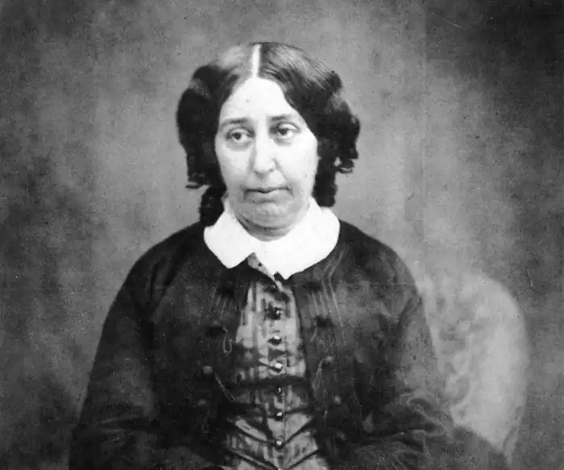
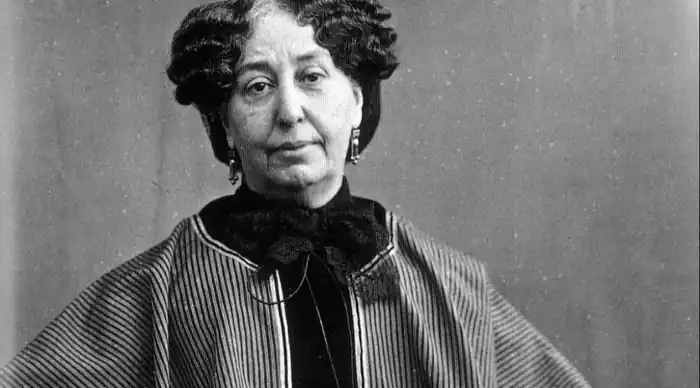
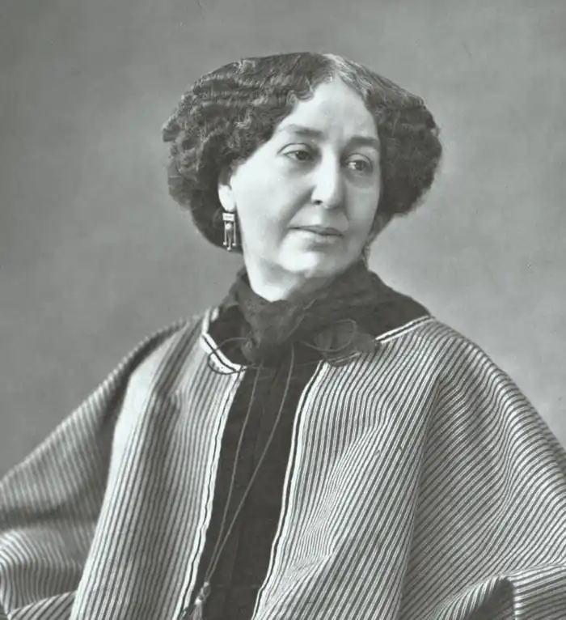

ЖОРЖ САНД (George Sand; автонім: Дюпен, Амандіна-Люсі-Аврора — 01.07.1804, Париж — 08.06.1876, Ноан) — французька письменниця.Батько Аврори Дюпен (після одруження — баронеса Дюдеван) помер, коли дівчинці виповнилося 4 роки. У сім'ї постійно тривали чвари між бабусею і матір'ю Аврори. Бабуся — аристократка, палка шанувальниця Вольтера, виступала проти шлюбу свого сина, який одружився на небагатій і незнатній дівчині. Замолоду Аврора під впливом матері була дуже релігійною. Освіту вона здобула у монастирі, якийсь час навіть хотіла постригтися у черниці. Але у 1821 р. померла бабуся, і Аврора успадкувала багатий маєток Ноан. Через рік вона вийшла заміж за Казимира Дюдевана. Однак цей шлюб виявився невдалим. І через дев'ять років Аврора зважується на мужній крок: знаючи, що її засуджуватимуть рідні та увесь тодішній бомонд, вона залишає чоловіка в Ноані і вирушає до Парижа. Родовита і багата жінка не взяла з собою нічого. Вона винаймає дешеві умебльовані кімнати, а на прожиття заробляє, працюючи в газеті "Фігаро".
Намагаючись стати економічно незалежною від чоловіка, Аврора починає писати романи. Перший успіх — роман "Роз і Бланш" ("Rose et Blanche", 1831), написаний спільно з літератором Жулем Сандо. Потім побачив світ перший самостійний роман — "Індіана" ("Indiana", 1832). Аврора Дюдеван підписала твір чоловічим іменем "Жорж Санд". За "Індіаною" з'являються романи "Валентина" ("Valentine", 1832), "Лелія" (1833), "Жак" ("Jacques", 1834).
Письменниця увійшла в літературу за часів, коли у романтичній прозі панували два жанри: історичний роман і "шалений" роман з нагромадженням неймовірних подій, боротьбою доведених до краю "фатальних" пристрастей, убивствами, жахіттями і т. д. Жорж Санд розробляє інший жанр — психологічний романтичний роман. У статті "Оберон" Е.-П, Сенанкура" (1833) вона відзначає його сповідальний характер (позначився вплив "Сповіді" Ж.-Ж. Руссо), виокремлює три різновиди психологічного роману (за характером романтично трактованої пристрасті), з'ясовує зв'язок індивідуальної психології з умонастроєм епохи (на цій підставі постає четверта психологічна тема — "страждання нездійсненного бажання"). Вплив Руссо позначився на усій творчості Ж. С. (у 1830-і pp. — руссоїстський культ природи, у 1840-і pp. — ідеї "суспільного договору" тощо). У романі "Індіана" викладена світоглядна програма Жорж Санд. Головною проблемою твору є так зване "жіноче питання". Безправність жінки у суспільстві Жорж Санд розглядає як один з виявів несправедливого суспільного устрою епохи Реставрації (дія роману відбувається у 1828 p.). Лейтмотивом усього твору є відчуття необхідності революційного перетворення суспільних звичаїв. У ньому побіжно виявляється вплив, який справила на Жорж Санд Липнева революція 1830 р. Героїню роману Індіану морально пригнічує її чоловік, полковник Дельмар. Зрештою, їй вдається духовно звільнитися від страждань — у цьому Індіані допомагає кохання до Реймона де Рам'єра. Але ця пристрасть призводить до трагедії. Служниця Нун, яка кохала Реймона, вкоротила собі віку. Індіана теж хоче вчинити самогубство, коли Реймон, злякавшись опінії бомонду, відмовляється від її кохання. Наступний акт трагедії розгортається на екзотичному тлі далекого острова Бурбон, французької колонії. Прекрасна, сповнена південних контрастів природа підкреслює перехід конфлікту між Індіаною і Дельмаром у відкриту, оголену форму. Остаточно розсварившись із чоловіком, Індіана розшукує в Парижі Реймона. Але він уже забув її, одружившись з іншою. Реймон боїться скандалу. Відтак Індіана повертається на острів. Там разом з Ральфом, який упродовж багатьох років потай кохав її без надії на взаємність, вона кидається у вир водоспаду. І ось фінал роману. Індіана та Ральф не загинули. Вони щасливо живуть, ховаючись від людей у хащах острова Бурбон. Утвердження щастя людини поза цивілізацією, у спілкуванні з природою — ще одна спільна риса творчості Жорж Санд і Ж.-Ж. Руссо. Проте письменниця, на відміну від Руссо, усвідомлювала романтичну винятковість такої "панацеї". У наступних романах Жорж Санд, відмовившись від такого штучного вирішення проблеми, не знаходить у реальному житті іншого виходу, крім самогубства. Вкорочує собі віку демонічна жінка Лелія, яка в пошуках духовної свободи завдає болю тим, хто її оточує (роман "Лелія"). До самогубства вдається і Жак, який розчарувався в ідеальності своєї дружини і вирішив дати їй свободу (роман "Жак"). Усі ранні романи Жорж Санд мають камерний характер. У них мало персонажів. Простір розповіді залишається доволі тісним і обмеженим. Соціальні мотиви ще не набувають самостійного значення. Головне в них — розкриття психології. Але воно відбувається не послідовно, а стрибкоподібно. Жорж Санд зауважує лише душевні катастрофи, вибухи почуттів, а не їхній розвиток. Уже в "Індіані" письменниця відмовилася від строкатого стилю "шалених романів". Вона шліфує просту, гнучку і містку фразу. Визначальною рисою прози Жорж Санд є її музичність (цю властивість стилю письменниці особливо цінував видатний угорський композитор Ф. Ліст). Другий період творчості Жорж Санд пов'язаний із її захопленням соціалістичними ідеями. Найбільший вплив на неї справив соціаліст-утопіст П'єр Леру. Письменниця перебувала у центрі духовного життя Парижа, Франції, Європи. Серед друзів Жорж Санд були письменники А. де Мюссе, П. Меріме, А. Міцкевич, композитори Ф. Шопен і Ф. Ліст, художник Е. Делакруа. Естетичні погляди Жорж Санд у цей період значно змінилися. її твори втрачають камерність. Вона виходить за межі вузького кола розкриття внутрішнього світу окремої людини. Жорж Санд однією з перших звертається до жанру соціального та соціально-утопічного романтичного роману. У романах Жорж Санд, як, скажімо, і в "Знедолених" В. Гюго, соціальний шар має значення лише як матеріал для порушення моральних проблем, які у романтиків не мають конкретно-історичного характеру. Саме цим Жорж Санд і Гюго відрізняються від критичних реалістів. Крім того, герої у романтиків, навіть володіючи типовими рисами, не пов'язані з типовими обставинами. Відтак ефект їхньої винятковості зберігається навіть тоді, коли ця винятковість викривається (образ Ораса в однойменному романі). Свої естетичні погляди Жорж Санд виклала у двох "Невимушених діалогах про пролетарську поезію" (1842). Вона перебуває на демократичних позиціях, впроваджує в літературу образ робітника, вбачаючи у ньому носія авторського ідеалу. Серед соціальних і соціально-утопічних творів Жорж Санд передусім слід назвати романи "Мопpa"("Mauprat", 1837), "Орас" ("Horace", 1841— 1842), "Мельник з Анжибо" (1844—1845), "Гріх пана Антуана" ("Le Peche de Monsieur Antoine", 1847). Окремої розмови вартий роман "Консуело" ("Consuelo", 1842—1843), один з найкращих творів письменниці. У ньому Жорж Санд здійснила спробу створити синтез психологічного, історичного, "шаленого" і соціального романтичного роману. В "Консуело" розкривається ставлення до мистецтва різних соціальних класів та груп на тлі життя XVIII ст. Циганка Консуело, яка вийшла з народних мас завдяки видатному таланту співачки, уособлює демократичний ідеал мистецтва. Консуело залишається вірною цьому ідеалові, зазнаючи випробувань і упродовж тривалого часу поневіряючись в Італії, Німеччині, Чехії. Похитнути її переконання не змогли ні підступи аристократів, ані слава, ані кохання. Розвиваючи свій задум у продовженні "Консуело" — романі "Графиня Рудольштадт" ("La Comtesse de Rudolstadt", 1843 — 1844), який виявився значно слабшим у художньому плані, Жорж Санд змальовує таємне товариство "Невидимих". У ньому на ґрунті довільного трактування найрізноманітніших теорій, релігій, філософій (християнство, вольтер'янство, масонство і т.д.) об'єдналися представники аристократії й суспільного дна. Ідеалізм, утопічні погляди письменниці тут заважають розгледіти сутність класових стосунків, відчути ілюзорність сподівань на класовий мир. У 1841 р. Жорж Санд і П'єр Леру заснували журнал "Незалежний огляд", який виходив до 1848 р. Саме в цьому часописі протягом 1841-1842 pp. друкувався роман Жорж Санд "Орас"— найвидатніший серед її соціальних романтичних романів. У цьому творі Жорж Санд виходить за межі долі окремого героя. Кульмінацією роману стає не катастрофа в духовному житті головного героя (як це було у психологічних романах), а велика історична подія — республіканське повстання 1832 р. Через цю подію виявляються справжні риси характерів дійових осіб. Дотримуючись принципу романтичної антитези, Жорж Санд протиставляє робітника Поля Арсена, його друга республіканця Ларавіньєра — справжніх героїв, які беруть участь у барикадних боях, і "антигероя" Ораса. Цей виходець із провінційної буржуазної сім'ї намагається вдавати байронічного героя. Любитель романтичної пози, досвідчений і переконливий облудник, Орас уміє сподобатися аристократові Теофілю де Монтові, майбутній чудовій актрисі Марті і навіть холодній світській дамі — віконтесі де Шайї. Та ось швидкий розвиток подій змушує Ораса діяти і пересічність його натури стає очевидною. Після вибуху повстання Орас утікає з Парижа. Його залишає Марта, віконтеса де Шайї ставиться до нього з презирством, Ларавіньєр викидає Ораса зі своєї кімнати. Форма роману відрізняється від форми творів першого періоду. "Орас" побудований як запис спогадів Теофіля де Монта. Застосування цього прийому призводить до зменшення психологічного елементу. Характер Ораса розкривається не через його внутрішні переживання (автор спогадів не може про них знати напевне), а через ставлення всіх героїв до Ораса і через його власні вчинки. Саме дії Ораса викривають його як антигероя. Третій період творчості, що розпочався після 1848 p., позначений поступовим занепадом діяльності Жорж Санд. Вона продовжує писати романтичні твори, повернувшись до проблематики і стилю психологічних романів першого періоду ("Сніговик", 1858; "Сповідь молодої дівчини", 1864 та ін.). Найбільше значення серед творів цього періоду мають статті і листи Жорж Санд, у яких вона викладає свої естетичні погляди.Письменниця виступає проти теорії "мистецтва для мистецтва", яку в 1850-х pp.